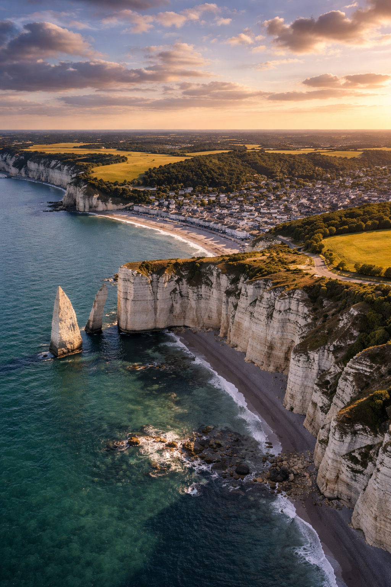
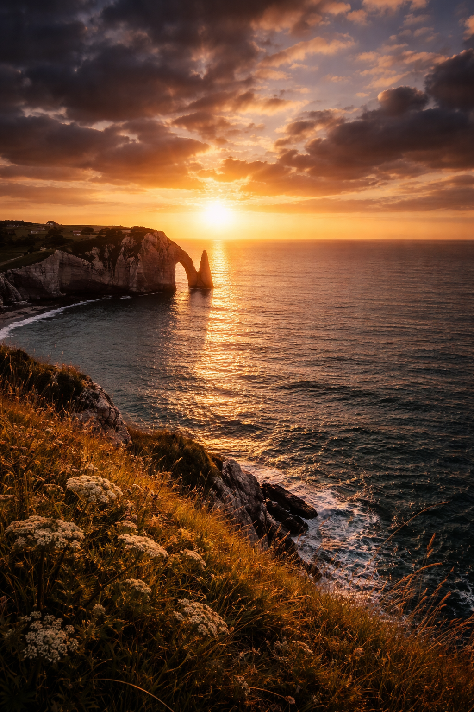

Prises de vue aériennes cinématiques et montage vidéo. Un regard depuis les hauteurs pour raconter des histoires autrement.


Je suis Matheo, pilote de drone et monteur vidéo basé à Cherbourg-en-Cotentin. Ma pratique est avant tout cinématique — je ne cherche pas simplement à filmer depuis le ciel, mais à construire une image, un mouvement, une émotion.
Chaque vol est préparé comme un tournage : choix de la lumière, du tracé, du rythme. Le montage fait partie intégrante de mon travail — c'est là que les images prennent leur sens et leur souffle.
Pour tout projet, collaboration ou simple question —
je réponds à chaque message.